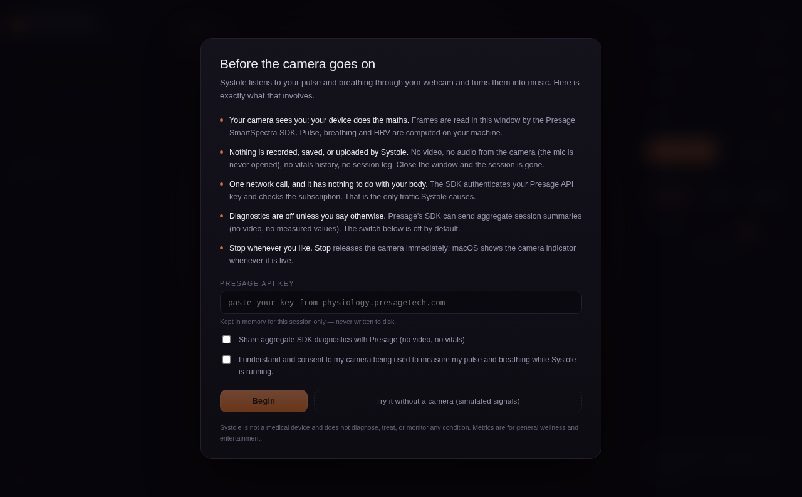

No camera handy?
The consent sheet offers a simulated mode that runs the instrument on stand-in signals. It stays badged SIMULATED and never claims to measure you.
Presage SmartSpectra SDK Challenge
Systole reads your pulse and breathing through a webcam and plays them as music. The kick lands on your real beats; your breath opens the chords.
macOS Apple Silicon Electron + native SDK MIT licensed

Signal to sound
The waveform itself plays the instrument. Each signal is wired to something you can hear.
Beat detection runs on the arterial pressure waveform and fires a kick plus a shockwave ring. The interval between those beats is the tempo.
Arterial pressure traceChest and abdomen movement drive a low-pass filter and the pad's level, so inhaling brightens the chord and exhaling lets it close.
Chest and abdomen tracesHRV is compared with your own earlier readings, never a fixed threshold. Calmer than usual opens the bright pentatonic; more charged turns it dark.
HRV, Baevsky indexA smile or a flicker of surprise raises the chance of a bell ornament. The instrument plays fine if your plan excludes face metrics.
ExpressionsThe measured rate picks the root of the piece and covers the tempo while the waveform is still settling.
Pulse rateWhen the camera can't read you properly the pad closes and new notes stop, with the SDK's validation hint in plain language.
Validation statusUnder the hood
The SmartSpectra renderer binding owns the camera and does the inference. Everything after the metrics payload is this app: a signal engine, a Web Audio synth and a canvas stage — no audio library, no UI framework.
Run it
Systole needs Electron and the native SmartSpectra runtime, so this page is the description and the repository is the app. Clone it, paste your key, press start.
$ git clone https://github.com/SarthakPatil18/Systole $ cd Systole $ npm install # Electron + native SmartSpectra runtime $ npm start # paste key, consent, Begin, Start # sit still, arm's length, face and upper chest in frame, front-lit # first pulse ≈ 12 s · breathing rate ≈ 30 s · HRV ≈ 60 s $ npm test # 18 logic tests + headless smoke run $ npm run check:sdk # real SDK → authentication boundary
The consent sheet offers a simulated mode that runs the instrument on stand-in signals. It stays badged SIMULATED and never claims to measure you.
macOS 14+ on Apple Silicon, Windows 10/11 x64, or Linux x64/arm64 with glibc 2.35+. Node 20+, and a free API key from Presage.
The native runtime is unpacked out of app.asar so its library can load.
Consent
A camera that watches your body has to earn that. The consent sheet is always in the way on purpose, and the app has nowhere to put your data.
Nothing touches the camera until a plain-language sheet is read, a consent box is ticked and Begin is pressed — every single session.
Measured on your machine. Frames go to the SDK locally; pulse, breathing and HRV are computed on-device.
Nothing recorded, saved or uploaded by Systole: no video, no audio, no vitals history, no analytics, no account. The microphone is never opened.
One network call: the SDK authenticating your API key. No video and no measured values travel in it.
SDK diagnostics stay off — the box is unticked by default, and what it would send is disclosed in the app and in the privacy note.
Stop releases the camera immediately, and the OS camera indicator is visible whenever it is live.

MIT licensed · macOS Apple Silicon, Windows and Linux builds from source